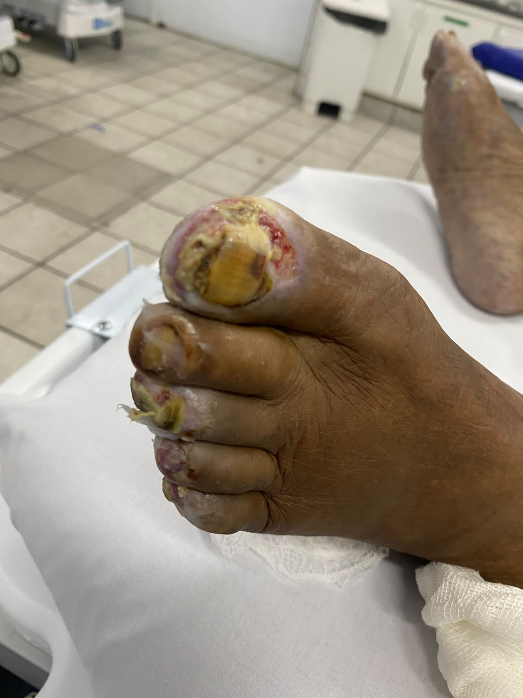

Úlceras digitais e necrose
Um caso clínico comentado do internato
1 Quando uma lesão digital exige mais do que um curativo?
Durante o internato médico, a observação de lesões ulceradas e áreas de possível necrose nos dedos levanta uma questão importante: qual mecanismo está comprometendo a integridade e a viabilidade dos tecidos?
A aparência da ferida é apenas o ponto de partida. Para compreender o caso, é necessário integrar a avaliação morfológica da lesão, a perfusão vascular, a possibilidade de infecção, a presença de neuropatia e os fatores sistêmicos que interferem na cicatrização.
Este caso é apresentado com finalidade educacional, a partir de uma imagem clínica. Como não dispomos, nesta publicação, da história completa, dos exames complementares e do diagnóstico final, as hipóteses discutidas não devem ser interpretadas como diagnósticos confirmados do paciente.
1.1 1. Apresentação clínica
A fotografia documenta lesões ulceradas em múltiplos dedos, com áreas de coloração amarelada, regiões avermelhadas e alterações de coloração que podem corresponder a diferentes componentes do leito da ferida.
A imagem, isoladamente, não permite determinar com segurança a profundidade das lesões, a viabilidade dos tecidos, a presença de infecção ou a causa subjacente.
Questão clínica: estamos diante de uma lesão predominantemente isquêmica, infecciosa, traumática ou decorrente da combinação de diferentes mecanismos?
Essa distinção é fundamental, pois a escolha do tratamento depende da etiologia e da gravidade, e não apenas da aparência superficial da ferida.

Figura 1. Aspecto clínico das lesões digitais.
1.2 2. Diagnóstico diferencial
1.2.1 2.1. Isquemia digital e doença arterial periférica
A redução do fluxo sanguíneo pode comprometer a oferta de oxigênio e nutrientes, prejudicar a reparação tecidual e culminar em ulceração e necrose. A doença arterial periférica é especialmente importante em pessoas com diabetes, mas a possibilidade de isquemia não deve ser atribuída automaticamente à presença de uma ferida.
A avaliação deve incluir história de dor em repouso, evolução da lesão, alterações de temperatura e coloração, palpação de pulsos e testes vasculares objetivos. Quando disponíveis e indicados, podem ser utilizados índice tornozelo-braquial, pressão digital, índice dedo-braquial e métodos de avaliação Doppler.
Em casos de suspeita de isquemia ameaçadora do membro, a avaliação vascular não deve ser postergada.
1.2.2 2.2. Infecção de partes moles e osteomielite
Feridas podem ser complicadas por infecção superficial ou profunda. A investigação considera purulência, eritema, calor, edema, dor, extensão do comprometimento e sinais sistêmicos. A ausência de dor não exclui infecção em pacientes com neuropatia.
Quando houver suspeita de acometimento ósseo, devem ser considerados o exame da ferida, a avaliação clínica e, conforme o contexto, radiografia simples e ressonância magnética. A escolha dos exames depende da probabilidade clínica e dos achados iniciais.
A colonização de uma ferida não equivale necessariamente a infecção. Antibióticos não devem ser utilizados apenas para promover a cicatrização de úlceras clinicamente não infectadas.
1.2.3 2.3. Neuropatia e traumatismo repetitivo
A neuropatia periférica pode reduzir a sensibilidade protetora, permitindo que pressões, atritos ou pequenos traumatismos se repitam sem percepção adequada. Deformidades digitais e calçados inadequados podem aumentar a pressão sobre áreas específicas.
Por isso, a investigação deve incluir sensibilidade protetora, deformidades, calosidades, distribuição das lesões e história de trauma.
1.2.4 2.4. Outras causas
Dependendo da história e do exame físico, também podem ser consideradas vasculites, fenômenos trombóticos, fenômenos embólicos, doenças autoimunes, lesões térmicas ou químicas e outras causas de comprometimento vascular ou tecidual.
O diagnóstico deve ser orientado pelos achados clínicos e pelos exames pertinentes, evitando atribuir a lesão a uma causa única sem evidências suficientes.
1.3 3. Fisiopatologia: como o tecido perde viabilidade?
A integridade tecidual depende da perfusão adequada, da disponibilidade de oxigênio, da resposta imunológica, da integridade neurológica e da capacidade de reparação.
Na isquemia, a redução da oferta de oxigênio compromete o metabolismo celular. Quando intensa ou prolongada, pode causar lesão irreversível e morte celular. A extensão do dano depende, entre outros fatores, da intensidade e da duração da redução do fluxo sanguíneo.
Na neuropatia, a perda da sensibilidade protetora favorece microtraumas repetitivos. A pressão mecânica persistente pode contribuir para a ruptura da pele e impedir a cicatrização.
Quando há infecção, a resposta inflamatória e a destruição tecidual podem agravar a lesão. Isquemia e infecção podem coexistir, aumentando a complexidade do tratamento.
Implicação clínica: tratar somente a superfície da ferida, sem abordar isquemia, infecção ou pressão mecânica, pode ser insuficiente para alcançar a cicatrização.
1.4 4. Avaliação clínica sistemática
A abordagem deve documentar os seguintes elementos:
- História clínica: diabetes, duração da doença, controle glicêmico, doença arterial periférica, neuropatia, tabagismo, doença renal, trauma e evolução das lesões.
- Exame da ferida: localização, comprimento, largura, profundidade, leito, bordas, exsudato e estruturas expostas.
- Avaliação vascular: temperatura, coloração, pulsos, enchimento capilar e testes objetivos de perfusão conforme a indicação.
- Avaliação neurológica: sensibilidade protetora e presença de deformidades.
- Investigação de infecção: sinais locais e sistêmicos, extensão do comprometimento e suspeita de envolvimento profundo.
- Exames complementares: selecionados conforme as hipóteses diagnósticas, a gravidade e os achados do exame físico.
A avaliação deve ser repetida ao longo do acompanhamento, permitindo identificar progressão, resposta ao tratamento e necessidade de mudança de conduta.
1.5 5. Cuidados locais das úlceras
As recomendações da International Working Group on the Diabetic Foot (IWGDF) destacam que o cuidado local deve integrar uma abordagem multidisciplinar. Mesmo uma cobertura apropriada não compensa isquemia não tratada, infecção inadequadamente controlada ou trauma persistente.
1.5.1 5.1. Limpeza e proteção
A limpeza deve remover resíduos e permitir a avaliação adequada do leito da ferida. Os pés devem ser lavados, mas não deixados de molho, pois a maceração pode comprometer a pele.
A cobertura deve ser escolhida conforme a profundidade, a quantidade de exsudato e as condições do tecido. Em geral, busca-se controlar o excesso de umidade e manter um ambiente favorável à cicatrização, evitando maceração da pele adjacente.
1.5.2 5.2. Desbridamento
O desbridamento pode remover tecido desvitalizado e calosidade quando indicado, favorecendo a avaliação da ferida e o manejo local. A técnica e a frequência devem ser definidas por profissional capacitado, conforme a condição clínica.
Atenção à isquemia: na presença de necrose seca e suspeita de perfusão gravemente comprometida, é necessário avaliar a condição vascular antes de decidir pela remoção do tecido. Nem toda área escurecida deve ser desbridada de maneira indiscriminada.
1.5.3 5.3. Alívio de pressão (offloading)
Reduzir a pressão e o trauma repetitivo é parte essencial do tratamento das úlceras relacionadas ao diabetes. O método deve considerar a localização da ferida, a biomecânica, a capacidade de marcha e a presença de infecção ou isquemia.
Em lesões não plantares, como algumas úlceras digitais, podem ser necessários dispositivos removíveis, adaptações de calçados, órteses ou outras estratégias específicas. A escolha deve ser individualizada.
1.5.4 5.4. Antimicrobianos e coberturas especiais
Antibióticos sistêmicos são indicados quando há infecção clínica, de acordo com a gravidade, os agentes prováveis, os resultados microbiológicos quando indicados e os protocolos locais.
Antibióticos tópicos ou coberturas antimicrobianas não devem ser empregados indiscriminadamente com o único objetivo de acelerar a cicatrização de uma úlcera não infectada.
Intervenções avançadas podem ser consideradas em casos selecionados que não evoluem com o cuidado padrão adequadamente realizado. Elas não substituem o tratamento da infecção, a correção da isquemia nem o alívio de pressão.
1.6 6. Sinais de gravidade e encaminhamento
Necrose progressiva, gangrena, suspeita de isquemia importante, infecção profunda, abscesso, exposição óssea ou sinais sistêmicos exigem avaliação médica urgente.
A associação entre infecção e isquemia demanda atenção especial, pois pode aumentar o risco de perda tecidual e amputação. A abordagem pode exigir participação de equipes de cirurgia vascular, cirurgia, infectologia, endocrinologia e profissionais especializados no cuidado de feridas, conforme os achados.
1.7 7. Aprendizados do caso
Este caso reforça três princípios do raciocínio clínico:
- A aparência não define a etiologia. Lesões semelhantes podem resultar de mecanismos diferentes, que precisam ser investigados.
- O cuidado local faz parte de uma estratégia maior. Limpeza, cobertura e desbridamento, quando indicados, devem estar associados à avaliação da perfusão, ao controle de infecção e ao alívio de pressão.
- A gravidade precisa ser reconhecida precocemente. Suspeita de isquemia ou infecção profunda muda a prioridade e a urgência da abordagem.
A principal pergunta diante de uma úlcera digital não é apenas qual curativo utilizar, mas qual processo está impedindo a cicatrização e ameaçando a viabilidade do tecido?
1.8 Referências
Schaper NC, van Netten JJ, Apelqvist J, et al. Practical guidelines on the prevention and management of diabetes-related foot disease (IWGDF 2023 update). Diabetes/Metabolism Research and Reviews. 2024. Texto completo.
Chen P, Campillo Vilorio N, Dhatariya K, et al. Guidelines on interventions to enhance healing of foot ulcers in people with diabetes (IWGDF 2023 update). Diabetes/Metabolism Research and Reviews. 2024;40(3):e3644. DOI: 10.1002/dmrr.3644.
Senneville É, Albalawi Z, van Asten SA, et al. IWGDF/IDSA Guidelines on the Diagnosis and Treatment of Diabetes-related Foot Infections. Clinical Infectious Diseases. 2023. Texto completo.
International Working Group on the Diabetic Foot. IWGDF Guidelines, 2023 update. Diretrizes e documentos oficiais.
Sociedade Brasileira de Angiologia e de Cirurgia Vascular. Diretrizes da Sociedade Brasileira de Angiologia e de Cirurgia Vascular sobre o pé diabético. 2023. DOI: 10.1590/1677-5449.202300872.
Conteúdo educacional destinado à discussão de conceitos clínicos. Não substitui avaliação individual, protocolos institucionais ou decisão da equipe assistencial.